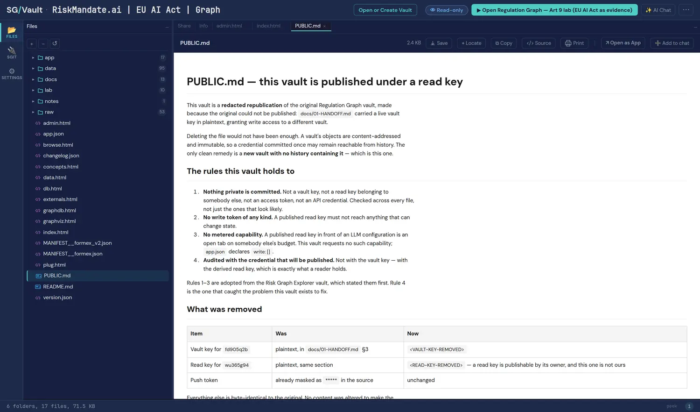

The provenance chain
This book's opening story is about a claim that travelled through 242 papers and more than 200,000 citation paths back to a study that said something else. The obvious question a reader should ask next is: so how do you know your version is correct? This vault is the best answer in the estate, because it treats the answer as a structure rather than a promise.
Five links, all walkable
The vault's second hard rule states the chain in full: claim → graph node → vault file → commit → official source, where the official source is a CELEX or ELI identifier plus the SHA-256 of the retrieved bytes. What makes it a chain rather than a citation is that every link is traversable by a reader who holds nothing but the published read key: the node is in the graph, the graph is in a file, the file is in a commit, and the commit records what it was parsed from.
The final link is the one most citation systems skip. A CELEX number identifies a document; it does not tell you whether the bytes you parsed are the bytes that were published. The hash does. It also makes silent drift detectable: if the source is retrieved again and the hash differs, that is a fact about the world rather than a merge conflict.
Two instruments, composed rather than consolidated
The overview shows two instruments composed into one view, each with its CELEX identifier and the SHA-256 of its retrieved bytes: Regulation 2024/1689 as amended by 2026/1744, with no official consolidation yet. That sentence is a factual claim about the state of EU law, and it is checkable.
The restraint is the interesting part. It would be easy, and much more comfortable to read, to merge the amendment into the base text and present one clean instrument. The vault refuses: it composes the two and says that it is composing, because a merged text would look authoritative while being nobody's official position. This is don't merge vocabularies applied to law, and the cost of the refusal is real — the reader has to hold two things in mind. The vault pays it anyway.
Application dates as versioned properties, never bare facts
Superseded pre-Omnibus dates are struck through rather than overwritten, each carrying its basis (Article 113(a) as amended) and an as-of date. So the graph does not say "the application date is X". It says "the application date is X as of this date, on this basis, and it was previously Y on that basis".
That is supersede, never delete in its literal form, and it answers the question the 10,000-hours story raises: when the date changes, everything that rested on the old date is still reachable, still marked, and still answerable. A document that overwrites a date destroys precisely the record you need when somebody asks why a decision was made in March.
The audit that stopped a publication
This vault exists in its current form because the first attempt could not be published, and the sequence is worth reading as a worked example of a control that actually fired:
- Classify the credential. The submitted credential was a vault key — write access — not a read key. The intake check refused it, for the fourth time.
- Derive rather than refuse. The read key was derived one-way; the vault key went to the gitignored tier that the release tripwire scans for.
- Audit with the key about to be published. 204 text files, from a read-key clone: the same view a reader gets, not a privileged one. One finding: a plaintext vault key for a different vault, inside a handoff document.
- Stop. No page was written. The finding was reported before anything else happened.
- Republish clean. A new vault with new history, two credentials redacted in place with visible
<VAULT-KEY-REMOVED>and<READ-KEY-REMOVED>markers rather than silently deleted lines, aPUBLIC.mdstating what changed, and a re-audit from a fresh read-key clone: 205 files, zero findings.
The detail that makes this a graph story rather than a security story: deleting the file would not have been enough. Vault objects are content-addressed and immutable, so a credential committed once may stay reachable from history. The only sound remedy was a new vault with new history — and the vault says so itself, in its own PUBLIC.md, rather than only on the page that links to it.

Rule 3 was verified rather than assumed
The Graph REPL reads an OpenRouter key, and lab/app/repl.js looks for one at /key.json inside the vault before falling back to device storage. So the publisher checked rather than reasoned: no key.json exists, confirmed in a clone made with the published read key — which is what a reader actually gets, rather than what the publisher's working copy contains.
And the false positives were resolved by reading them rather than waved away. The audit flagged more than 370 bare 64-hex strings; all of them were SHA-256 provenance hashes. The vault's own comment on that is a line this site should adopt: "a scan that never produces a false positive is not scanning hard enough."
- The evidence layer (review r002 item 4) gains its reference implementation: five links, a hash at the end of the chain, and a rule that the check is run from the reader's view rather than the publisher's.
- Chapter 5 (supersede, never delete) gains a literal instance: struck-through application dates carrying basis and as-of date, not overwritten values.
- Chapter 12 (what ships) gains the immutability consequence: in a content-addressed store, deleting a leaked credential is not a remedy, and the only sound answer is republication with new history.
- Chapter 16 (where this loses) gains an honest cost: composing two instruments instead of consolidating them makes the graph harder to read, and the vault accepts that trade rather than hiding it.